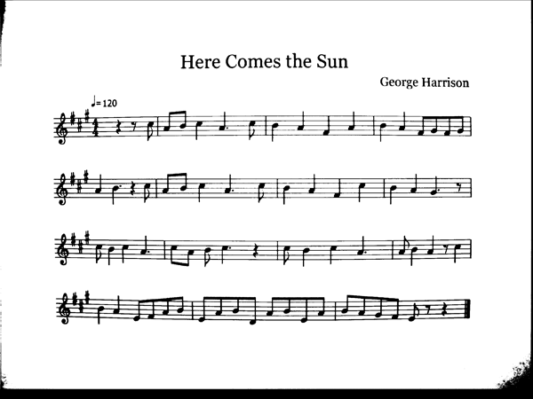

Algorithm
We have a music transcription process that transforms a picture of sheet music into playable notes.
- Image AcquisitionThe first step in transcribing sheet music is capturing an image of the music. To accomplish this, we used an Altera D5M camera interfaced it with an Altera DE2 FPGA board. Altera supplies sample interface code served as the starting point for using the camera. We continuously captured frames from the camera and store it in the SDRAM on the FPGA. Eachframe from the camera is a five-megapixel image in RGB Bayer Pattern format, which is converted to a grayscale image in the hardware using bilinear interpolation demosaicing. This image is output continuously to the VGA Monitor until the user stops the camera. Once the camera is stopped, it no longer writes incoming data to the SDRAM. The most recent image stored in memory is passed on to be used in the following stages of the process. At this point, the image is ready to be processed.
- Binarization The software converts the grayscale image to a binary image. Due to computation restraints on our hardware, a static threshold is used to binaryize the image. The software determines whether each pixel in the image should be white or black and assigns the value accordingly. Using a binary image takes eight times less memory space than a grayscale image and allows simpler processing.
- Fisheye CorrectionThe next step of the algorithm is to correct for lens distortion. The fisheye distortion applied by the camera is removed by using a parabolic transformation which maps pixel data to different indices. This reliably reconstructs the image free of distortion.
- Staff RetreivalThe software then segments the image into staffs. It uses a projection onto the y axis to determine the location of the staff lines. Staff lines run almost the entire length of the image and their projections are larger than surrounding data by a significant margin. These staff lines are then grouped into groups of five. From the data contained in these groups, the image is divided into its different staffs.
- Remove Staff LinesThe software removes the staff lines from the image by whiting out pixels where staff lines are known to be located. As the staff lines are being removed, the pixels above and below the image are checked to determine if the staff line intersects a symbol. If the staff line intersects a symbol, that portion of the line is not removed.
- Classify and Remove Key SignatureThe software determines the key signature by using projections on the x axis to locate sharp and flat symbols. Key signatures never contain a mix of sharps and flats. As such, when both sharps and flats are located, the software determines them all to be whichever symbol had more occurrences. From the number of sharps or flats that are found, the key signature is determined. It is then cropped out of the image.
- Find Notes with StemsThe software isolates notes with stems by taking vertical projections of the staff image. Peaks in the image correspond to either measure markers or notes with stems. Here all detected notes have been boxed in to show where the software found notes and connected eighth notes.
- Remove NotesOnce the notes are located are located, the vertical lines and note heads are removed and the characteristics of the note or measure marker are saved to be used later in classification.
- Classification
The software assigns pitch and duration values to stemmed notes based on their characteristics. Pitch is determined based on the center of mass of the note head. Whichever staff line or space is closest to the center of mass of the note is assumed to be the intended note. Duration is determined by checking if the note head is filled or open and if it has a tail. If the note head is open, the note is a half note. If the note has a tail it is an eighth note. Otherwise it is a quarter note.
Whole notes are located later in the classification process. After the symbol is located, the symbol's features are compared against a set of known characteristics for whole notes. If it is found to be a whole note, its duration is assigned accordingly, and its pitch is determined from its center of mass.
- Output
Musical output consists of using the previous pitch, duration, and key signature data to output the corresponding music. The software takes all of the pitch and duration data from classification, along with the data for the key signature and assembles it into a list of frequency and time values. The software then uses these values in conjunction with direct digital synthesis and the FPGA's audio codec to output the waveforms corresponding to the sheet music. Additional tonal qualities were achieved by adding harmonic frequencies for each note.
{kind=link}
{kind=link}
{kind=link}
{kind=link}
{kind=link}
{kind=link}
{kind=link}
{kind=link}